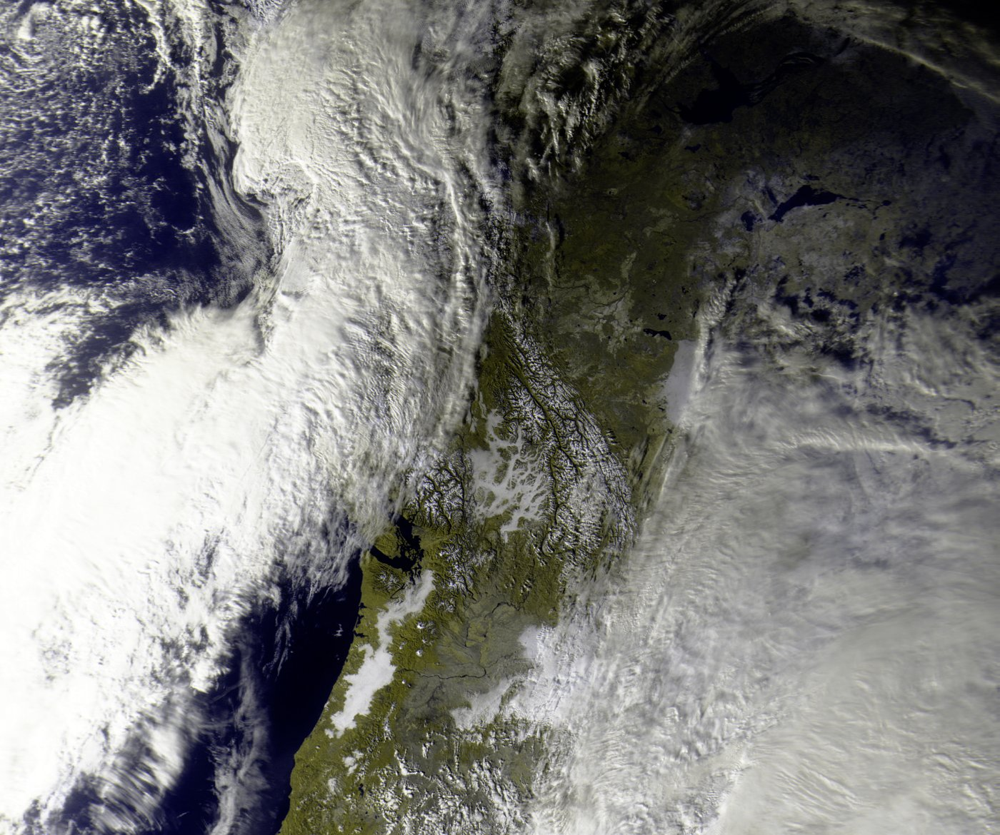
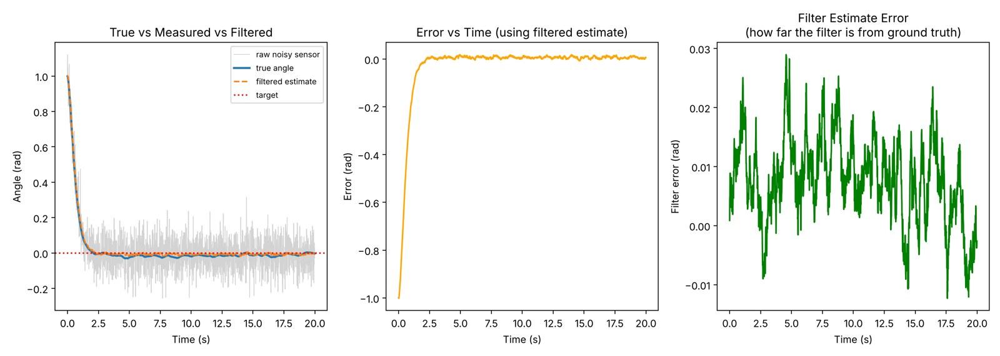

Nick Beattie
Integrated Engineering student at UBC, specializing in mechanical and electrical. I design and build hardware end to end.
Satellite Ground Station & Pass Predictor

A receiving station for weather satellites, built around an RTL-SDR V3 and a V-dipole antenna on a mount I designed and 3D-printed. It receives Meteor-M LRPT signals at 137 MHz, which I decode into images like the one above using SatDump.
To plan each pass, I wrote a pass predictor in Python that propagates satellite orbits (SGP4, via Skyfield) and models the expected Doppler shift and link budget. It runs as a live web app, with orbital data refreshed automatically every day by a GitHub Action.
Results: 14.8 dB peak SNR · Live pass predictor · Code
Autonomous Line-Following Robot
An ESP32-based robot I designed, wired, and programmed on my own. QRD1114 reflective sensors track the line with closed-loop steering, tuned to handle breaks in the line and 90° turns. An ultrasonic sensor detects the target and triggers an arm to strike it.
Results: completed 4/4 competition courses · recovers a lost line in ~0.2 s
Modular Payload Drone
A drone built around one standardized payload interface: a shared mechanical mount and power/data connection, so the same aircraft can carry a camera, a light, or a sensor module, swapped in the field.
Design targets: tool-free payload swap in under 30 s · under 250 g (no pilot certificate required) · $200 budget
Autonomous Grabbing Claw
A servo-driven claw that grabs objects on its own. As it's lowered, an ultrasonic sensor measures the distance to the ground and the claw closes automatically, then releases the object only once it reaches the drop location.
I wrote most of the Arduino code and designed the electronics and sensor layout.
Results: picked up 13/16 differently shaped objects in testing · top 3 of 25+ teams
Single-Axis Attitude Control Simulation

A Python simulation of a spacecraft attitude control loop: a PID controller drives the spacecraft to a target angle using a noisy sensor model fused with a complementary filter. I tuned the gains for critical damping (damping ratio ζ = 1).
Results: settling time 7.8 s → 1.5 s · overshoot 36% → 3% · filter cuts attitude estimate error by 87%
Electric Vehicle Braking System
I designed the braking system for our team's competition electric vehicle through iterative testing and experimentation. The 20-student team built and raced the car, finishing top 10 of 20 teams with zero mechanical failures in the endurance race.